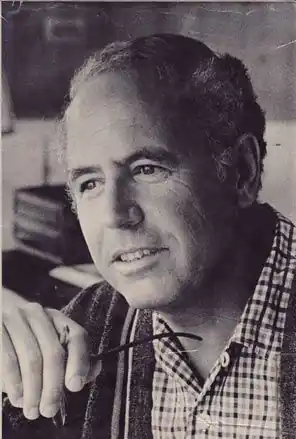

Артур Гейлі народився 5 квітня 1920 року в англійському містечку Лутоні (графство Бедфордшир), розташованому за 30 миль від Лондона. Мати до шлюбу працювала служницею у заможній родині, батько був ветераном Другої англо-бурської та Першої світової воєн. Батьки мріяли про вище соціальне положення для сина, ніж займали самі, тому віддали його до школи. У вільний від навчання час Артур читав багато книжок і вже з дитинства закохався в літературу. Втім через скрутне фінансове становище у віці 14 років хлопцю все ж таки довелося покинути школу і влаштуватися кур'єром у рієлторську компанію.
1939 року юний Артур Гейлі вступив добровольцем до лав військово-повітряних сил Британського королівства. Однак через незакінчену середню освіту був позбавлений допуску до тренувальних польотів і три роки прослужив штабним обліковцем. 1942 року в званні капрала Артура Гейлі все ж таки відрядили на льотну підготовку спочатку до американського штату Джорджія, а потім до канадської провінції Нова Шотландія. Льотне навчання давалося йому важко, скільки Гейлі страждав на повітряну хворобу, однак дружня атмосфера нівелювали труднощі тренувальних польотів. Артур Гейлі прослужив на повітряному флоті до 1947 року, коли вийшов у відставку в званні другого лейтенанта. У листопаді 1947-го Артур Гейлі переїхав на постійне проживання до Канади і влаштувався молодшим редактором в одному з галузевих журналів видавництва "Маклін-Гантер" у Торонто. За два роки він став старшим редактором і протримався на цій посаді шість років. Після цього Артур Гейлі перейшов на службу до транспортної компанії. На посаді керуючого з питань збуту він зарекомендував себе як енергійний працівник із конструктивним підходом і запасом ідей. Втім, це не вберегло його від фінансової скрути, до якої спричинилося розлучення і повторний шлюб у 1951 році.
У 1955 році канадська телекомпанія Сі-Бі-Сі запропонувала Артуру Гейлі написати телеп'єсу про отруєння на борту літака. Враховуючи попередній досвід з написання рекламних проспектів і коротких заміток в періодиці, той погодився. Після прем'єри телеп'єси на національному телебаченні Артур Гейлі прославився і кинув роботу в транспортній компанії. Спочатку він заснував власне рекламне агентство "Гейлі паблісіті сервісез лімітед", але основну увагу приділяв створенню телевистав. До середини 1960-х років Артур Гейлі встиг написати одиннадцять п'єс, адаптованих для телебачення. 1959 року дебютував як письменник зі своїм першим романом, який відкрив його ім'я широкому загалу. Від цієї миті й до кінця 1970-х років Артур Гейлі займався виключно письменницькою діяльністю. Після успіху роману "Готель" в 1965 році Гейлі переїхав до Каліфорнії, а в 1969-му переїхав на Багами, щоб уникнути канадських та американських податків, на сплату яких йшло до 90 % його доходів. 1978 року друга дружина письменника Шейла Гейлі написала його біографію під назвою "Я вийшла заміж за бестселер". Після цього Артур Гейлі заявив, що має достатньо грошей аби не писати заради заробітку, а створення його романів задля задоволення потребує надто високих витрат, тому він припинив письменницьку діяльність. Втім, у 1984 році романіст пережив серйозний серцевий напад, що поставив під загрозу його життя. Через вдячність до лікарів, а також під впливом лікарняних вражень Артур Гейлі написав роман "Сильнодіючі ліки" — останній з його бестселерів. У 1990-х роках він ще двічі повертався до великої прози. Останні роки життя письменник провів на віллі на багамському острові Нью-Провіденс. Помер від серцевого нападу, ускладненого інсультом 24 листопада 2004 року.